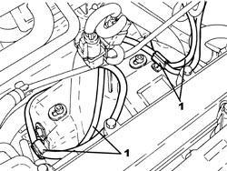
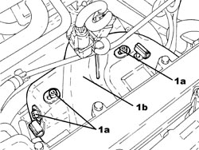

1072C43 EXHAUST MANIFOLD UPPER BULKHEAD R R
- Path
- Procedures > 10 ENGINE > 1072 INLET AND EXHAUST MANIFOLDS > 1072C EXHAUST MANIFOLDS > 1072C43 EXHAUST MANIFOLD UPPER BULKHEAD R R
- Kind
- repair procedure (removal / refitting; the operation number is the code)
- Applies to
- engines: 2.2 JTS; all production periods
- Interactive page
- https://sloeber94.github.io/elrnDB-aBrrSpdr/en/#/946001949
Applies to: engines: 2.2 JTS; all production periods
 Removing
Removing
 Refitting
Refitting1. Release the electrical wiring for the Lambda sensors from the fastenings on the exhaust manifold upper heat shield.

Applies to: engines: 2.2 JTS; all production periods
1. Undo the bolts (1a) and remove the exhaust manifold upper heat shield (1b).

Applies to: engines: 2.2 JTS; all production periods
Refitting
Removing- Place the exhaust manifold upper heat shield back in its housing and secure it using the bolts.
- Secure the electrical wiring for the Lambda sensors to the fastenings on the exhaust manifold upper heat shield.
Topics that link to this page (14)
- 1016C10 SINGLE CYLINDER HEAD - R.R. AND REPLACE GASKET
- 1020D36 FLYWHEEL SIDE OIL SEAL - REPLACE FOR MANUAL GEARBOX WITH HYDRAULIC SELECTION VERSIONS
- 1020D38 FLYWHEEL SIDE OIL SEAL - REPLACE
- 1024B10 ENGINE FLYWHEEL - R + R FOR VERSIONS WITH MANUAL GEARBOX
- 1024B11 ENGINE FLYWHEEL - R.R. FOR MANUAL GEARBOX WITH HYDRAULIC SELECTION VERSIONS
- 1028H10 CONNECTING ROD AND PISTON SET - R.R
- 1072C13 EXHAUST MANIFOLD GASKET - REPLACE
- 1072C16 EXHAUST MANIFOLD WITH CATALYTIC CONVERTER - R.R.
- 1072C42 EXHAUST MANIFOLD LOWER BULKHEAD R R
- 1810A20 CLUTCH - R + R
- 1810A28 CLUTCH - R.R. FOR MANUAL GEARBOX WITH HYDRAULIC SELECTION VERSIONS
- 1820B30 CLUTCH HYDRAULIC ACTUATOR - R.R.
- 2110A10 MANUAL GEARBOX AND DIFFERENTIAL - R + R
- 2110A11 MANUAL GEARBOX WITH DIFFERENTIAL - R.R. FOR VERSIONS WITH HYDRAULIC SELECTION